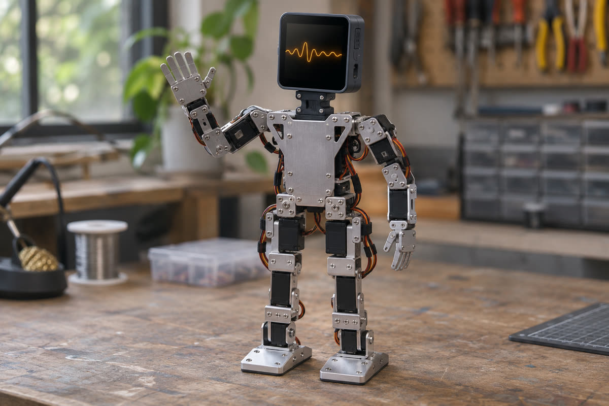
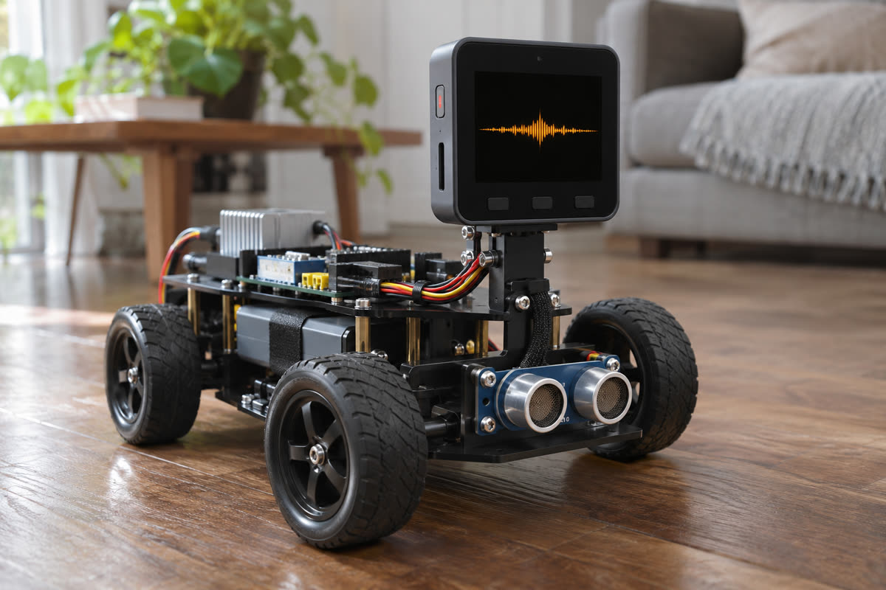
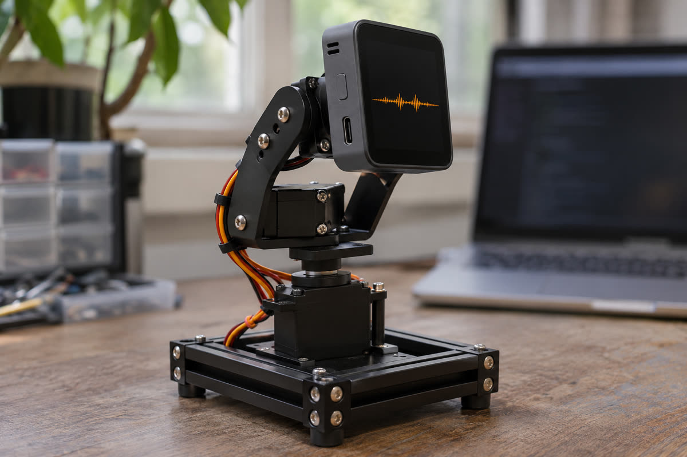

What if it had a body?
The CoreS3 Lite could be the head and face of a robot that walks, turns, or performs tasks: it listens, speaks, sees, and displays things; the AI understands and decides; the body moves and takes care of its own safety. These are ideas: none of this has been built. The images are illustrations.
Closed list of commands
The AI only chooses from known actions, within limits (walking at most 50 cm at a time). The server discards anything else. Speech never becomes code.
The body brakes, not the AI
The response takes about 7 seconds. The kit’s own distance sensor stops the robot before it hits anything, in milliseconds.
Powering the body
The board’s battery is small. The head is powered by the kit’s battery through USB-C.

1. Workshop humanoid
“Wave to the visitor.” The AI chooses a recorded gesture (waving, pointing, dancing) and speaks along with it. Great for classes and presentations.

2. Follow-me cart
“Come with me.” The board tracks your face; the AI chooses a direction based on photos; the cart brakes on its own. The easiest one to start with.

3. Robot dog
“Sit.” “Shake.” The kit already knows how to walk; the head recognizes its owner and gives the character a voice. The one that delights children the most.

4. Desk-assistant arm
“Pass me the blue pen.” The AI finds the pen in the photo and the arm picks it up. The most useful physical task, and the hardest: it requires calibrating the camera and arm.

5. Head that turns toward whoever is speaking
Two servos: the board finds your face and the base turns to look at you. The cheapest and safest first step.

6. Balcony gardener
“Water the basil.” The AI sees which pot is dry; the cart goes to it and turns on the pump for a few seconds.
Suggested order: 5 → 2 → 3 or 1 → 4 or 6. Full text, with a drawing of each one, at IDEIAS-CORPOS.md.